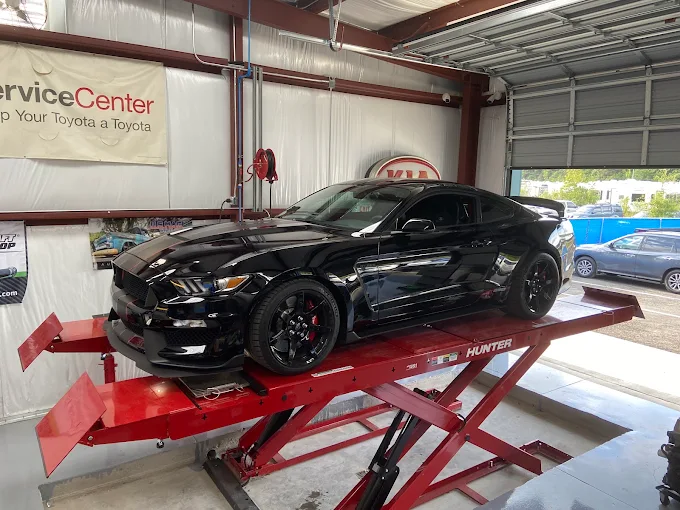
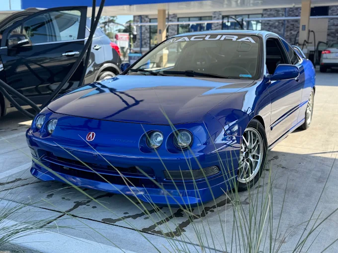

Diagnostics
Find the cause, not just the symptom. Talk to the shop about warning lights, unusual noises and drivability concerns.
Talk to the shop
LONGS, SOUTH CAROLINA / INDEPENDENT AUTO REPAIR
Your daily driver. Your weekend project. From everyday repairs and diagnostics to alignments and performance work, we keep Longs-area drivers moving.
01 / ONE SHOP. BOTH SIDES OF AUTOMOTIVE.
Some cars get you to work. Others keep you up thinking about the next upgrade. We understand both.
Certified Automotive serves Longs and the surrounding Grand Strand with everyday repair, maintenance and specialized automotive work. A practical approach to the problem. A genuine interest in the vehicle.
02 / THE WORK THAT KEEPS YOU MOVING
From the routine to the hard-to-pin-down.
Start with a conversation, not a guess.
Find the cause, not just the symptom. Talk to the shop about warning lights, unusual noises and drivability concerns.
Talk to the shopHelp your vehicle track properly with attention to handling and tire wear.
Talk to the shopBrake inspection, diagnosis and repair for the way you drive every day.
Talk to the shopAddress handling concerns, unwanted movement and suspension-related problems.
Talk to the shopTroubleshooting and repair for engine-related concerns, from symptoms to next steps.
Talk to the shopKeep everyday maintenance on your radar before small concerns become bigger ones.
Talk to the shopEssential service for your daily driver. Call to discuss your vehicle’s requirements.
Talk to the shopDiscuss tire wear, wheel-related concerns and service options with the shop.
Talk to the shopDiagnosis and repair for the climate-control system you rely on.
Talk to the shopEnthusiast-minded attention for your project. Call to discuss the build and available services.
Talk to the shopTell us what the vehicle is doing. We’ll help you figure out the next step.
03 / FOR THE CARS YOU CARE ABOUT
Routine repair is only part of the story. There’s an enthusiast side to Certified Automotive, too.
Bring the daily driver. Talk through the project. Let’s discuss what your vehicle needs and what’s available for your build.

A CLOSER LOOK AT PERFORMANCE
Working through a build or want to know what the car is putting down? Talk to Certified Automotive about current dyno availability, vehicle compatibility and services.
Ask about dyno service ↗04 / MORE THAN A REPAIR SHOP
The cars bring people together. The conversations keep them around. Certified Automotive has an enthusiast side that goes beyond the everyday service visit.
Take a look at the supplied Dyno Night artwork, then call the shop for confirmed upcoming events and official social updates.
Ask about the next event ↗Event artwork is for reference. No upcoming date, admission price or event schedule is confirmed here.

05 / THE WAY WE APPROACH THE WORK
Understand the problem and explain the repair clearly.
Everyday maintenance and challenging automotive concerns, approached with care.
Focus the conversation on what the vehicle actually needs.
A shop that understands transportation and a passion for cars.
06 / LET THE REPUTATION SPEAK
Customer feedback highlights honesty, knowledge, clear communication, fair pricing and accurate diagnosis. Read the reviews and hear directly from drivers who have visited the shop.
Review themes summarized; no fabricated testimonials or fixed rating counts.

07 / INDEPENDENT. LOCAL. CERTIFIED AUTOMOTIVE.
Right here in Longs, serving drivers throughout the surrounding Grand Strand area, including the North Myrtle Beach area.
Basic maintenance. A difficult diagnosis. An alignment. A major repair. A conversation about your project. Whatever brings you in, the goal stays the same.
08 / REAL CARS. REAL SHOP.
No stock-photo garage.
This is Certified Automotive.
09 / YOUR NEXT STEP STARTS HERE
Need a diagnosis? Tell us what the vehicle is doing and we’ll help you figure out the next step.
(843) 467-3548 ↗Certified AutomotivePLAN YOUR VISIT
Hours reflect directory listings. Call to confirm before visiting, especially around holidays.